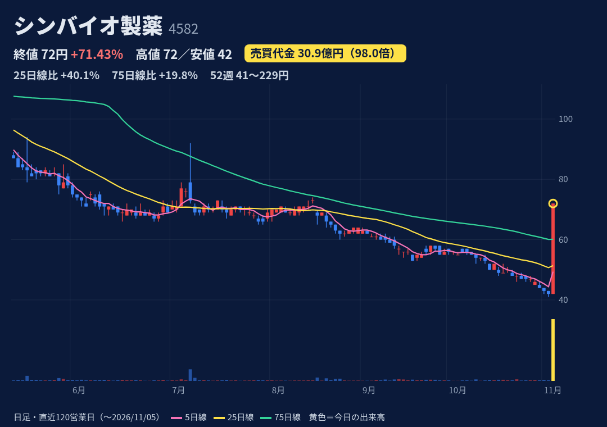
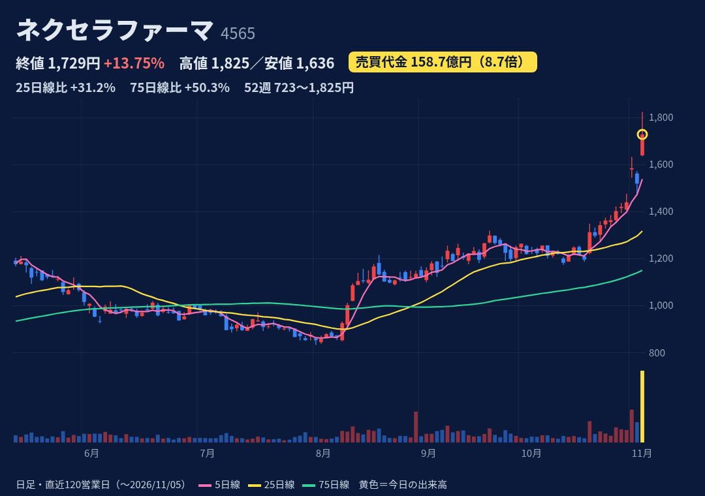
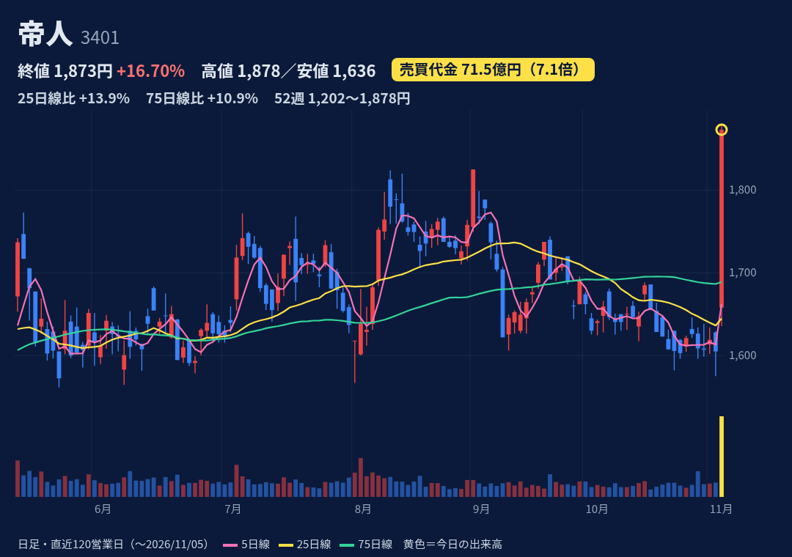
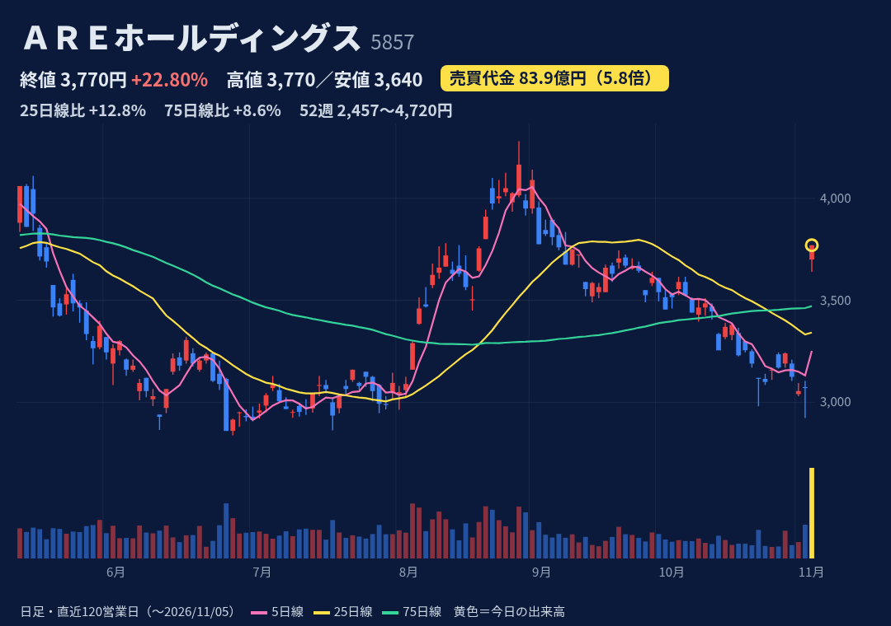
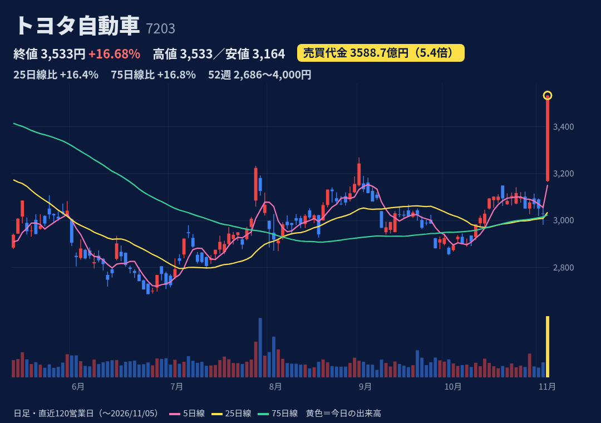
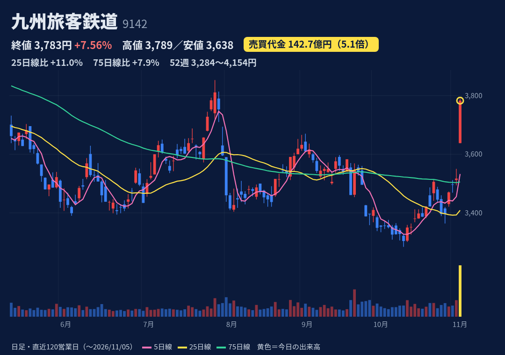

がん・血液・希少疾患の創薬ベンチャー。抗ウイルス薬ブリンシドホビル（BCV）を開発中
11/5 9:30開示：BCV（造血幹細胞移植後のアデノウイルス感染症）で英MHRAと承認申請を進めることで合意。来年1月中の正式申請を準備（株探／MINKABU PRESS）
1-9月 売上7.2億(-25.6%)、営業赤字48.7億(前年33.4億の赤字)。通期予想(売上38.9億・営業赤字42.3億)は据え置き＝4Qに大きな収入が前提。次回決算日は未確認
始値42円=安値→終値72円=高値のS高（上ヒゲなし、VWAP65円）。25日線51円・75日線60円を上抜け。52週高値229円(2/25)・安値41円(11/4)。前例：2月に121→201円へ急騰後、5日で-35%
信用買いのみ（非貸借）。買残504万株・売残0（JPX 11/4）＝今日の出来高4,988万株の約1割。日々公表・増担保はJPXの11/4更新時点で指定なし（11/5以降の新規指定は未確認）
債務超過12.9億（2四半期連続）で継続企業の前提に重要な不確実性あり。EVO FUND向けMSワラント第70回の未行使約4,087万株＋第71回＝希薄化・売り圧力。社長ら個人から5.15億円借入（返済期日12/30）

旧そーせい。GPCR（膜タンパク）を標的にした創薬に強み。神経・免疫・消化器領域、日本での開発販売も
11/4 15:30開示：EP4作動薬NXE0033744をAbbVieにグローバル導出。一時金1億ドル（約158億円）、マイルストン最大13.7億ドル＋ロイヤリティ。同時に通期営業益予想をレンジ上限157億円に確定
1-9月 売上277億(+27%)、営業益31.8億（黒字転換）。通期 売上488億(+64.8%)・営業益157億＝4Qに一時金157.8億を計上する前提（HSR等の承認・監査人合意が条件）。次回決算日は未確認
始1,640・高1,825・終1,729＝陽線だが高値から約5%押した上ヒゲ、VWAP1,748円の下で引け。52週高値更新。25日線+31%・75日線+50%と乖離大。前例：4/1 +16%→5日後±0%
買残872万株・売残13万株＝倍率約65倍（JPX 11/4）。週次10/30は57倍（株探）。日々公表・増担保はJPXの11/4更新時点で指定なし（11/5以降の新規指定は未確認）
一時金の計上はHSR法など独禁法クリアランスと年内完了が前提。株価は10/22の1,298円から約1.3倍で過熱感。信用買残が厚く戻り売りが出やすい。転換社債など潜在株の状況は未確認

合繊大手。炭素繊維で世界2位。素材（樹脂・電池部材等）、繊維製品、医薬・医療（ヘルスケア）が柱
11/5 11:30（昼休み）中間決算で通期を上方修正：売上9,000→9,200億、営業益700→750億、最終450→500億、事業利益300→400億。エレクトロニクス&エナジー（樹脂・電池部材）が好調。配当は据え置き
上期 売上4,396億(-2.5%)、事業利益308億(2.4倍)、営業益708億(前年541億の赤字)。営業益は「その他の収益」554億を含む。通期営業益750億に対し上期で進捗94%。次回決算日は未確認
前場は1,650〜1,670円→12:30から急騰。高1,878・終1,873で上ヒゲほぼなし（VWAP1,819）。52週高値更新。25日線+13.9%・75日線+10.9%。前例：5/12 +9%→5日後-3.9%
買残32万株・売残6万株＝倍率約5.2倍（JPX 11/4）。週次10/30も5.21倍で買残は小さい。日々公表・増担保はJPXの11/4更新時点で指定なし（11/5以降の新規指定は未確認）
上期の営業益は一過性の「その他の収益」が大きく、下期の営業益は計算上約42億（750-708）。早期退職の特別退職金70億は計上済み・予想織込み済み。前期は880億の最終赤字で構造改革の途中

貴金属リサイクル（都市鉱山から金・銀・パラジウム等を回収）と北米の精錬事業が中心
11/4 15:30中間決算で通期上方修正（営業益410→520億、最終290→360億）、年間配当135→155円、ToSTNeT-3で自社株買い（上限220万株・75億円）。11/5朝に200万株を3,070円で取得し終了
上期 売上3,652億(+53.3%)、営業益287億(+87.4%、従来予想200億)。通期 売上7,000億・営業益520億(+40.2%)、進捗55%。AIデータセンター向けの電子分野が伸長。次回決算日は未確認
始3,700・終3,770=高値のS高（上ヒゲなし、VWAP3,743）。52週高値4,720(3/2)・安値2,524で位置57%。25日線+12.8%・75日線+8.6%。前例：5/7 +14%→5日後-3.7%
買残77万株・売残1万株＝倍率約74倍（JPX 11/4）。週次10/30は84倍（株探）で売り方がほぼ不在。日々公表・増担保はJPXの11/4更新時点で指定なし（11/5以降の新規指定は未確認）
利益は貴金属価格・為替・北米の裁定取引に左右される。信用買いが厚く上値で売りが出やすい。自社株買いは11/5の200万株で終了＝今後の買い支えはなし

世界首位級の自動車メーカー。国内シェアも高く、ハイブリッドなど環境技術に強み
①米中間選挙で民主党が上下両院の多数を確実に→関税修正期待で朝から高い（日経・トレーダーズ）②13:55決算：通期営業益3.4→3.9兆円に上方修正、自社株買い枠1兆→1.3兆円（市場買付＋損保向け自己株TOB）。親子上場解消等の話はなし
上期 営業収益26.96兆(+9.5%)、営業益2.19兆(+9.2%)。7-9月営業益1.13兆(+34%、ロイター予想9,920億超え)。通期営業益3.9兆(+3.6%)で進捗56%、想定1ドル157円。次回決算日は未確認
始3,168(+4.6%)→前場3,200円前後→13:55発表後に急伸、終値3,533=高値（上ヒゲなし、VWAP3,372）。52週高値4,000(2/9)・安値2,686で位置65%。25日・75日線の約16%上。過去1年で倍率3倍超は2回のみ（共に下落日）
買残1,143万株・売残205万株＝倍率約5.6倍（JPX 11/4）。週次10/30は5.15倍、買残は10月上旬の約1,900万株から減少。日々公表・増担保はJPXの11/4更新時点で指定なし（11/5以降の新規指定は未確認）
自己株TOBは11/4終値3,028円の10%引き2,725円（11/6〜12/7、上限1億875万株）で株価の下支えにはならない。関税修正はまだ思惑。下期の最終益は前年同期比-35.7%（株探試算）。大型株の1日+17%は反動に注意

九州全域の鉄道会社。不動産・ホテル・流通など鉄道以外の収入が過半
11/4 15:30中間決算：熊本地震（7/28）の特損約92億で通期最終益を516→470億に下方修正、売上・営業益予想（750億）は据え置き。11/5は寄りから上昇したが、上昇理由を報じた記事は確認できず（「悪材料出尽くし」は推測）
上期 売上2,465億(+3.7%)、営業益363億(-11.3%)、7-9月営業益154億(前年209億)。通期 売上5,205億・営業益750億(+1.3%)は据え置き、最終470億。上期進捗48%。年間配当121円は維持
始3,638(+3.4%)・高3,789・終3,783で高値引け近辺（VWAP3,748）。52週高値4,154(2/9)・安値3,284(10/14)で位置57%。25日線+11%・75日線+7.9%。過去1年で倍率3倍超は3回、いずれも5日後マイナス
買残59万株・売残7万株＝倍率約8.9倍（JPX 11/4）。週次10/30は9.50倍で、10月初の14倍から低下。日々公表・増担保はJPXの11/4更新時点で指定なし（11/5以降の新規指定は未確認）
鉄道施設の損害額は鉄道・運輸機構と協議中で修正の可能性。7-9月は地震で運輸収入が減少。据え置いた通期営業益には下期387億（前年同期比+17%・計算値）が必要。材料が不明なままの上昇
株価・出来高・信用残：取引所データ。材料：各社開示・各社報道。